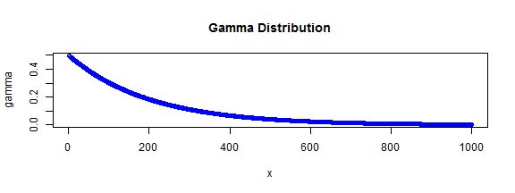
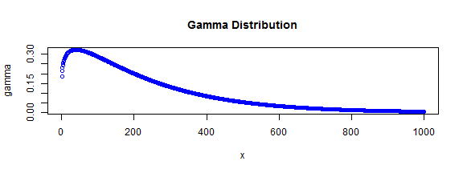

- The Gamma Distribution
- Density Plots
- The Software
Thomas Tilli
It is a two-parameter distribution, where the parameters are know as shape and rate
The density funtion of the damma distribution is defined as: \[ \frac{1}{\beta^{\alpha }\Gamma(\alpha)} x^{\alpha-1} e^{-x/{\beta}} \]
The parameter \(\alpha\) is the shape parameter and the parameter \(\beta\) is the rate parameter.
Special cases are the exponential (\(\alpha=1\)) and the chi-squared (\(\alpha=\nu/2, \beta=2\))

Second: \(alpha=1.2, \beta=0.5\) gives a distribution with humped shape:
